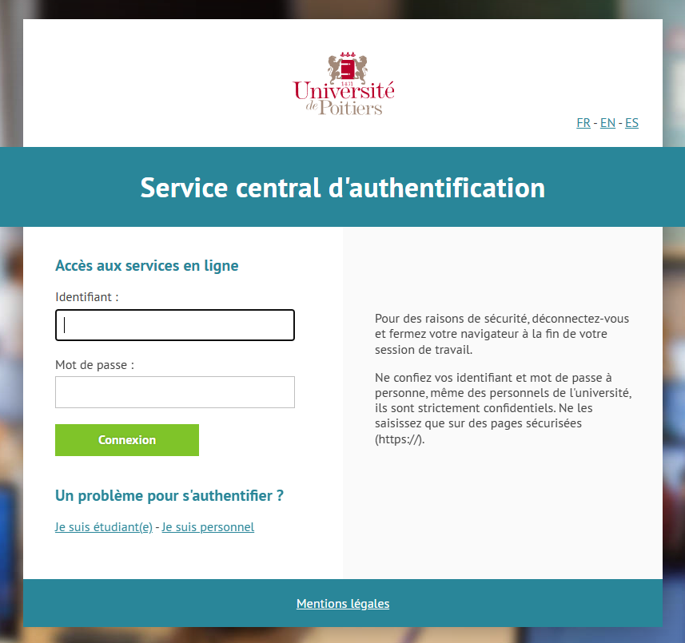

Voici votre signature générée :
Le texte a été copié !
Ajouter une signature à vos e-mails dans Zimbra
Tutoriel complet ici :
Tutoriel d'implémentation de la signature dans Zimbra :
1 - Cliquez sur Zimbra sur cette page Web.
2 - Connectez-vous en mettant votre identifiant et votre mot de passe.


3 - Une fois connecté, cliquez sur «Préférences" dans la partie supérieure de la page.
4 - Cliquez ensuite sur «Signatures" à gauche de la page.
5 - Si votre signature actuelle est remplie mais ne vous convient pas, cliquez sur « Nouvelle signature » en bas de la partie « Signatures ».
6 - Dans le champ "Nom", donnez un nom à votre signature.
7 - Collez votre signature générée dans le cadre situé sous le nom de votre signature.
8 - Dans « Utilisation des signatures », sélectionnez votre nom de signature dans les deux catégories du « Compte principal »
9 - Choisissez l'une des deux options pour la « Position de la signature » (Nous vous conseillons « Au-desssus du mail inclus »).
10 - N'oubliez pas d'enregistrer votre signature avec le bouton « Enregistrer » situé en haut à gauche de la page web.
Consultez les infos complémentaires :